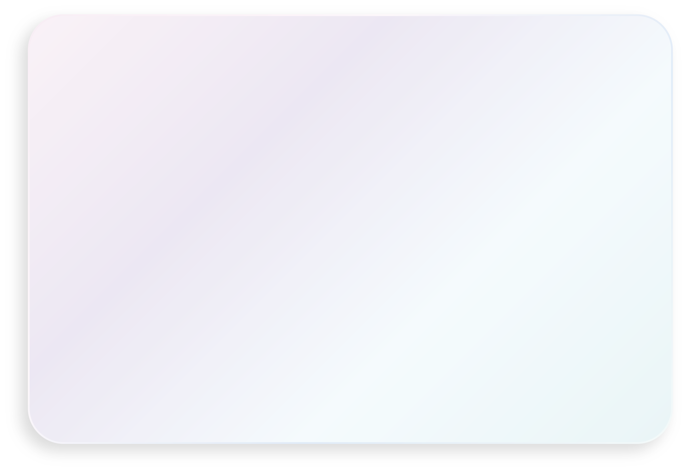
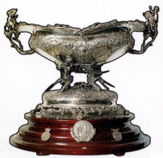

Падрос и Хулиан
Паласиосы

Альфо́нсо XIII

Основание
В 1896 году был создан клуб «Футбол Скай», ставший прародителем мадридского клуба.
Но официальной датой основания считается 6 марта 1902 года, когда братья
Падрос и Хулиан Паласиосы открывают клуб под названием Madrid Football Club.
29 июня 1920 года король Испании Альфонс XIII присвоил клубу титул Королевский,
что по-испански звучит как Real. Отсюда современное название клуба — Real Madrid.
С момента основания клуб стал претендовать на лидерство в испанском футболе:
уже в 1903 году он вышел в финал Кубка страны,
где уступил «Атлетику» из Бильбао. Через несколько лет почётный
трофей надолго «переехал» в столицу: «Мадрид» завоёвывал Кубок Испании
четыре раза подряд. Чемпионаты Испании стали проводиться
только с сезона 1928/29, а до того клубы определяли
сильнейших по регионам. «Мадрид» (с 1920 года — «Реал Мадрид»)
за это время первенствовал в столичном округе 16 раз.

Альфредо ди Стефано

Realmadrid
1980
1970-е — 1990-е годы
В середине семидесятых «Реал» отметил разгромную победу над «Барселоной» (4:0) в финале Кубка Испании сезона 1973/1974. В 1978 году «Реал» приобрёл Ули Штилике и Хуанито, которые, несмотря на несхожесть игровой манеры, на долгие годы станут идолами мадридских болельщиков. 4 июня 1980 года мадридцы победили в финале Кубка страны, разгромив «Кастилью» 6:1. На следующий год «Реал» вновь напомнил о себе Европе, выйдя в финал Кубка европейских чемпионов. Однако в яростной схватке с «Ливерпулем» мадридцы, руководимые Вуядином Бошковым, вынуждены были уступить со счётом 0:1. В декабре 1983 года тренером «Реала» стал Альфредо ди Стефано, а команду пополнили Мартин Эскер, Мичел, Санчис и Эмилио Бутрагеньо, который совсем скоро стал одним из символов команды. Уже в первой игре за «королевский» клуб Бутрагеньо отличился дважды и принёс победу мадридцам в матче против «Кадиса».
24 мая 1985 года пост президента занял Рамон Мендоса, чьё правление будет отмечено выдающимися достижениями. В 1985 и 1986 годах мадридцы завоёвывали Кубок УЕФА, обыграв в финальных матчах «Видеотон» и «Кёльн». На своём поле «Реал» выступал особенно вдохновенно: казалось, его игрокам под силу отыграться с любого счёта. Однажды им удалось совершить и вовсе нечто невероятное: проиграв мёнхенгладбахской «Боруссии» со счётом 1:5, мадридцы провели на «Сантьяго Бернабеу» четыре безответных мяча и вышли в следующий раунд. После нескольких относительно неудачных сезонов пост главного тренера «Реала» занял Хорхе Вальдано, до этого плодотворно поработавший в «Тенерифе». Наставник доверил место в основном составе Редондо, Лаудрупу, Амависке, Кике Флоресу.
8 января 1995 года команда Вальдано уничтожила своих главных соперников из «Барселоны», победив в матче чемпионата со счётом 5:0, а впоследствии завоевала чемпионский титул. Однако следующий сезон «Реал» провалил, и место на тренерском мостике в июле 1996 года занял знаменитый итальянец Фабио Капелло. Заметно обновился и состав команды, в которую влились Зеедорф, Миятович и Роберто Карлос. Для победы в чемпионате команде Капелло хватило одного сезона. В мае 1998 года «Реал» в седьмой раз завоёвывает Кубок чемпионов, победив в решающем матче «Ювентус» (1:0), а через несколько месяцев выигрывает и Межконтинентальный кубок у «Васко да Гамы».
После неудачного сезона 1998/1999 руководство «Реала» решило доверить пост главного тренера Висенте дель Боске и не прогадало: клуб в восьмой раз выиграл Кубок чемпионов, обыграв «Валенсию» (3:0) в финальном матче. Отлично проявил себя Рауль, ставший настоящим лидером команды. В 2001 году «Реал» в 28-й раз завоевал титул чемпиона страны.
Возвращение Переса (2009 — настоящее время)
Презентация Кака в качестве игрока «Реала», 30 июня 2009 года
1 июня 2009 года Флорентино Перес вновь стал президентом «Реала», причём без голосования, так как все конкуренты сняли свои кандидатуры. После своего возвращения Перес начал воссоздавать совершенно новый «галактикос». Для начала в команде произошли изменения в руководстве: советником президента стал бывший игрок «Реала» Зинедин Зидан. 9 июня после длительных переговоров и различных слухов в «Реал» перешёл полузащитник итальянского «Милана» и сборной Бразилии Кака за 68 млн евро. Он подписал шестилетний контракт с клубом и стал первым звёздным новичком после второго прихода Переса. Затем был подписан контракт с лучшим игроком мира 2008 года Криштиану Роналду, который давно мечтал надеть майку «сливочных». За португальца «Реал» выложил 80 миллионов фунтов стерлингов (93,4 миллиона евро). 25 июня «Реал» подписал 23-летнего Рауля Альбиоля из «Валенсии», сумма трансфера Альбиоля составила 15 миллионов евро. 1 июля 2009 года «Лион» официально подтвердил переход Карима Бензема в «Реал». Сумма трансфера составила 35 миллионов евро. В стан «Реала» вернулись полузащитник Эстебан Гранеро и выступающий на позиции правого защитника Альваро Арбелоа из «Ливерпуля». Сумма трансфера Арбелоа составила 4 млн евро, контракт подписан на 5 лет. Пару Арбелоа составил Хаби Алонсо, также перешедший из «Ливерпуля» 5 августа. Алонсо был оценён в 30 млн фунтов стерлингов.
Несмотря на солидные приобретения, команде так и не удалось завоевать хоть какой-нибудь трофей за сезон. В чемпионате Испании Реал занял итоговое второе место, уступив пальму первенства Барселоне, при этом проиграв в обеих очных встречах. Клуб вновь неудачно выступил в Лиге чемпионов, в шестой раз подряд не сумев преодолеть стадию 1/8 финала. А в Кубке Испании команда выбыла из борьбы уже на первом этапе в противостоянии с командой из третьего испанского дивизиона «Алькоркон». По итогам сезона главный тренер Мануэль Пеллегрини был уволен с поста за неудовлетворительные результаты. После непродолжительных переговоров главным тренером Реала назначен португалец Жозе Моуринью, только что оформивший с итальянским «Интером» победный требл.
Летом не обошлось без привычной трансферной активности клуба, хотя и не с таким размахом, как годом ранее. На приобретения было потрачено более 70 млн евро, а команду пополнили опытнейший португальский защитник Рикарду Карвалью, молодые испанские полузащитники Педро Леон и Серхио Каналес, представители нового поколения немецкого футбола Сами Хедира и Месут Озил, а также перспективный аргентинский вингер Анхель Ди Мария.
Сезон 2010—2011 «Реал» начал весьма успешно, показывая, что готов бороться за титул, но в итоге стал вторым. Гораздо успешнее дела шли в Кубке Испании. Команда уверенно дошла до финала, где их поджидала всё та же «Барселона». «Реал» в непростом для обеих команд матче сумел победить: гол Криштиану Роналду, забитый в дополнительное время, принёс команде долгожданный трофей. В Лиге чемпионов «Реал» дошёл до полуфинала, где в напряжённом, очень непростом и неоднозначном для судейства противостоянии, по сумме двух матчей уступил «Барселоне».
Летом 2011 года клуб продолжил укреплять состав. Были приобретены полузащитник Нури Шахин, нападающий Хосе Кальехон, а также защитники Рафаэль Варан и Фабиу Коэнтрау. Кроме того, 22 июня клуб официально объявил о расширении полномочий главного тренера команды Жозе Моуринью, которому были доверены функции спортивного менеджера. Таким образом, «Реал Мадрид» осуществил переход к «английской» модели управления командой.
Икер Касильяс во время игры за «Реал Мадрид», 2012 год
Мадридский «Реал» в сезоне 2011/12 установил новый рекорд Примеры, набрав за один сезон 100 очков. «Королевский клуб» превзошёл достижение «Барселоны», которая в чемпионате 2009/10 достигла отметки в 99 баллов. Кроме того, «Реал» стал первой командой, которой за один сезон удалось победить в 32 встречах, при этом «Реал» установил рекорд по количеству забитых голов за сезон, подопечные Моуринью забили 121 гол в чемпионате Испании 2011/12.
Летом 2012 был куплен полузащитник «Тоттенхэма» Лука Модрич и взят в аренду полузащитник «Челси» Майкл Эссьен. Но из клуба ушёл целый ряд полузащитников: Фернандо Гаго перешёл в «Валенсию», Серхио Каналес также перешёл в «Валенсию», Хамит Алтынтоп перешёл в «Галатасарай», Эстебан Гранеро перешёл в «Куинз Парк Рейнджерс», Лассана Диарра перешёл в «Анжи», Нури Шахин на правах аренды перешёл в «Ливерпуль», а зимой 2012 вернулся в «Боруссию». Также летом клуб покинули защитник Даниэль Карвахаль, который перешёл в Байер 04 и защитник Ройстон Дренте, который перешёл в «Аланию». Зимой в клуб вернулся вратарь Диего Лопес, который перед этим выступал в «Вильярреале» и «Севилье».
Сезон 2012/13 «Реал Мадрид» начал с победы над «Барселоной» в Суперкубке Испании (4:4 по сумме двух матчей). В Примере «Реал» занял второе место. В Кубке Испании «Реал» дошёл до финала, попутно выбив из турнира «Барселону», но в финале уступил «Атлетико» (1:2). В лиге чемпионов «Реал» закончил выступления в полуфинале турнира, уступив дортмундской «Боруссии» (3:4 по сумме двух матчей).
20 мая стало известно, что Жозе Моуринью покинет клуб. 2 июня Флорентино Перес был переизбран президентом «Реала». 27 июня Карло Анчелоти был представлен как главный тренер клуба. Помощниками главного тренера были назначены француз Зинедин Зидан и англичанин Пол Клемент.


Kaka

Криштиану
Роналду
«Десима» и европейский требл
Летом 2013 года был куплен ряд полузащитников: вингер «Тоттенхэма» Гарет Бейл, опорник «Сан-Паулу» Каземиро, полузащитник «Реал Сосьедада» Асьер Ильяраменди и полузащитник «Малаги» Иско. Так же после сезона в «Байере» в клуб вернулся Даниэль Карвахаль. Из «Кастильи» в клуб были переведены российский полузащитник Денис Черышев и испанский нападающий Хесе. Однако клуб покинули ряд игроков: в «Наполи» перешли нападающий Гонсало Игуаин, защитник Рауль Альбиоль, нападающий Хосе Кальехон; полузащитник Месут Озил перешёл в «Арсенал», полузащитник Кака — в «Милан», полузащитник Педро Леон стал игроком «Хетафе». На правах свободного агента клуб покинули Рикарду Карвалью, который стал игроком «Монако» и Антонио Адан. Майкл Эссьен вернулся в «Челси», а в начале сентября Денис Черышев на правах аренды стал игроком «Вильяреала».
16 апреля 2014 года «Реал» выиграл Кубок Испании, обыграв в финале «Барселону» со счётом 2:1. Решающий гол забил Гарет Бейл.24 мая 2014 года «сливочные» выиграли десятый и первый с 2002 года Кубок чемпионов УЕФА, обыграв в финале «Атлетико Мадрид» со счётом 4:1.
После победы в Лиге чемпионов в 2014 году мадридский «Реал» подписал контракт с вратарём Кейлором Навасом, полузащитником Тони Кроосом и атакующим полузащитником Хамесом Родригесом. Клуб одержал победу в матче за Суперкубок УЕФА 2014 против «Севильи». Этот трофей стал 79-м официальным в истории клуба. В течение последней недели летнего трансферного окна 2014 года «Реал» продал двух ключевых игроков: Хаби Алонсо в «Баварию» и Анхеля Ди Марию в «Манчестер Юнайтед». Это решение клуба было окружено спорами, и Криштиану Роналду заявил: «Если бы я был главным, возможно, я бы сделал всё по-другому», а Карло Анчелотти признал: «Мы снова должны начать всё с нуля.»После неудачного старта сезона 2014/15 мадридский «Реал» провёл рекордную 22-матчевую победную серию, которая включала в себя победы над «Барселоной» и «Ливерпулем», превзойдя предыдущий рекорд Испании в 18 побед подряд, установленный «Барселоной» под руководством Франка Райкарда в сезоне 2005/06. Серия завершилась в первом матче 2015 года поражением от «Валенсии», в результате чего клубу не хватило двух побед, чтобы повторить мировой рекорд — 24 победы подряд. 20 декабря «Реал» выиграл Клубный чемпионат мира, в финале одержав победу над аргентинским «Сан-Лоренсо». «Реал Мадрид» не смог повторить прошлогодний успех и победить в Лиге чемпионов УЕФА, проиграв в полуфинале «Ювентусу», и в Кубке Испании, а также занял второе место в чемпионате с отставанием в два очка от ставшей чемпионом «Барселоны». 25 мая 2015 года Карло Анчелотти был уволен с поста главного тренера.3 июня 2015 года новым главным тренером «Реала» стал Рафаэль Бенитес, подписавший с клубом двухлетний контракт. Мадридский «Реал» оставался непобеждённым в чемпионате до тех пор, пока в матче 11-го тура не проиграл «Севилье» со счётом 2:3. За этим последовало домашнее поражение 0:4 в первом матче Эль-Класико сезона против «Барселоны». В матче 1/16 финала Кубка Испании 2015/16 «Реал» выпустил на поле дисквалифицированного на тот момент Дениса Черышева в первом матче против «Кадиса» на выезде, выигранном со счётом 3:1, в результате чего ответный матч был отменён, а «Реал» дисквалифицирован. Бенитес был освобождён от своих обязанностей 4 января 2016 года после обвинений в непопулярности среди болельщиков, недовольстве игроками и неспособности добиться хороших результатов в матчах с сильными командами.
4 января 2016 года было объявлено об уходе Бенитеса вместе с назначением Зинедина Зидана. Под руководством Зидана «Реал» завершил сезон 2015/16 на втором месте в чемпионате, отстав всего на одно очко от «Барселоны». 28 мая мадридский «Реал» выиграл свой 11-й титул Лиги чемпионов УЕФА, увеличив собственный рекорд по количеству побед в этом соревновании, это достижение получило название «Ундесима».
«Реал Мадрид» начал первый полноценный сезон Зидана в качестве главного тренера с победы в матче за Суперкубок УЕФА 2016. К 10 декабря 2016 года мадридцы провели 35 матчей подряд, не потерпев ни единого поражения, установив тем самым новый клубный рекорд. 18 декабря 2016 года «Реал Мадрид» выиграл Клубный чемпионат мира, в финале одержав победу над японским клубом «Касима Антлерс» со счётом 4:2. После ничьей со счётом 3:3 в матче Кубка Испании против «Севильи» 12 января 2017 года беспроигрышная серия мадридцев продлилась до 40 матчей, побив испанский рекорд «Барселоны» — 39 матчей без поражений во всех турнирах в предыдущем сезоне. Их беспроигрышная серия закончилась после поражения на выезде от «Севильи» в Ла Лиге со счётом 1:2 тремя днями позже. В мае 2017 года «Реал Мадрид» выиграл Ла Лигу в рекордный 33-й раз в истории и первый за последние пять лет. 3 июня 2017 года клуб защитил титул победителя Лиги чемпионов УЕФА, обыграв в финале туринский «Ювентус» и став первой командой в современной истории, сумевшей одержать победу в этом турнире два раза подряд. Этот титул стал 12-м для мадридского «Реала» и третьим за четыре года, а также рекордным в истории турнира. Это достижение также известно как «Дуодесима». В сезоне 2016/17 «Реал Мадрид» выиграл наибольшее количество трофеев за один сезон в своей истории.
«Реал Мадрид» одержал победу в матче за Суперкубок УЕФА 2017, обыграв «Манчестер Юнайтед» со счётом 2:1. 5 дней спустя «Реал Мадрид» победил «Барселону» на Камп Ноу в первом матче за Суперкубок Испании, а затем, выиграв ответный матч со счётом 2:0, прервал серию «Барселоны» из 24 матчей против «Реала» подряд с забитыми голами. 16 декабря 2017 года «Реал Мадрид» выиграл Клубный чемпионат мира, в финале одержав победу над бразильским клубом «Гремио» со счётом 1:0 и став первым клубом, сумевшим выиграть этот турнир дважды подряд. В этом же сезоне клуб выиграл третью Лигу чемпионов УЕФА подряд, став первым клубом, выигравшим три титула Лиги чемпионов УЕФА подряд с момента основания турнира, а также первой командой, выигравшей три еврокубковых турнира подряд со времён мюнхенской «Баварии» в 1970-х годах. 31 мая, всего через пять дней после победы в финале, Зидан объявил о своей отставке с поста главного тренера мадридского «Реала», мотивируя свой уход «необходимостью перемен».
В 2017 году «Реал Мадрид» получил кубок «Девяти ценностей» — награду Международной детской социальной программы «Футбол для Дружбы». Ежегодно Кубок вручается за высокий уровень социальной ответственности клуба и за наибольшую приверженность ценностям проекта: дружбе, равенству, справедливости, здоровью, миру, преданности, победе, традициям и чести. Победителя выбирали дети-участники финальных мероприятий программы F4F из 64 стран мира.
12 июня 2018 года новым главным тренером «Реала» стал Хулен Лопетеги, бывший тренер сборной Испании. Было объявлено, что он официально станет главным тренером после чемпионата мира по футболу 2018 года. Однако сборная Испании уволила Лопетеги за день до начала турнира, заявив, что он вёл переговоры с клубом, не ставя их в известность. Затем летом 2018 года клуб начал переформировывать состав, что включало в себя продажу Криштиану Роналду «Ювентусу» за объявленные 100 миллионов евро. После череды неудачных выступлений и поражений команды Лопетеги был уволен и заменён тогдашним тренером «Реал Мадрид Кастилья», Сантьяго Солари. 22 декабря 2018 года «Реал Мадрид» выиграл свой третий Клубный чемпионат мира подряд, в финале одержав победу над эмиратским клубом «Аль-Айн» со счётом 4:1. Благодаря этой победе мадридский «Реал» стал абсолютным рекордсменом турнира с четырьмя титулами. Клуб считается чемпионом мира в общей сложности семь раз, потому что ФИФА признаёт Межконтинентальный кубок предшественником Клубного чемпионата мира ФИФА. «Реал Мадрид» также увеличил рекорд по количеству выигранных подряд титулов в турнире. 11 марта 2019 года мадридский «Реал» вновь назначил Зидана на должность главного тренера клуба.12 января 2020 года «Реал Мадрид» обыграл «Атлетико Мадрид» в серии пенальти и завоевал свой одиннадцатый титул Суперкубка Испании. После трёхмесячного перерыва из-за пандемии COVID-19, начавшегося в марте 2020 года, «Реал Мадрид» вернулся после перерыва в июне, одержав 10 побед подряд после возобновления чемпионата, и выиграл свой 34-й чемпионский титул.19 апреля 2021 клуб объявил о том, что вместе с ещё 11 клубами входит в Суперлигу. Но через пару дней из-за возмущения фанатов один за одним клубы стали официально выходить из лиги. «Реал» и ещё 3 клуба продолжили переговоры. Сезон чемпионата клуб завершил на втором месте, отстав от «Атлетико Мадрид» всего лишь на балл, а в Лиге чемпионов 2020/21 команда дошла до 1/2 финала, проиграв будущему обладателю кубка «Челси».27 мая 2021 года Зинедин Зидан покинул пост главного тренера, а 1 июня на пост главного тренера вернулся Карло Анчелотти. Усилениями команды стали молодой полузащитник французского «Ренна» Эдуарду Камавинга, и австрийский защитник «Баварии» Давид Алаба. Сезон 2021/22 для команды стал триумфальным, команда стала обладателем Суперкубка Испании, Ла Лиги (в рекордный 35-й раз) и Лиги чемпионов, обыграв 27 мая 2022 года английский «Ливерпуль» со счётом 1:0 и выиграв титул в рекордный 14-й раз.10 августа 2022 года «Реал Мадрид» обыграл «Айнтрахт» в матче за Суперкубок УЕФА 2022 со счётом 2:0 и таким образом завоевал свой 5-й титул в этом турнире, сравнявшись по этому показателю с «Барселоной» и «Миланом».
Достижение:
Национальные

Чемпионат Испании:
Чемпион (36, рекорд): 1931/32, 1932/33, 1953/54, 1954/55, 1956/57, 1957/58, 1960/61, 1961/62, 1962/63, 1963/64, 1964/65, 1966/67, 1967/68, 1968/69, 1971/72, 1974/75, 1975/76, 1977/78, 1978/79, 1979/80, 1985/86, 1986/87, 1987/88, 1988/89, 1989/90, 1994/95, 1996/97, 2000/01, 2002/03, 2006/07, 2007/08, 2011/12, 2016/17, 2019/20, 2021/22, 2023/24
Вице-чемпион (25): 1929, 1933/34, 1934/35, 1935/36, 1941/42, 1944/45, 1958/59, 1959/60, 1965/66, 1980/81, 1982/83, 1983/84, 1991/92, 1992/93, 1998/99, 2004/05, 2005/06, 2008/09, 2009/10, 2010/11, 2012/13, 2014/15, 2015/16, 2020/21, 2022/23

Кубок Испании:
Обладатель (20): 1905, 1906, 1907, 1908, 1917, 1934, 1936, 1946, 1947, 1961/62, 1969/70, 1973/74, 1974/75, 1979/80, 1981/82, 1988/89, 1992/93, 2010/11, 2013/14, 2022/23
Финалист (20): 1903, 1916, 1918, 1924, 1928/29, 1930, 1933, 1940, 1943, 1958, 1959/60, 1960/61, 1967/1968, 1978/79, 1982/83, 1989/90, 1991/92, 2001/02, 2003/04, 2012/13

Суперкубок Испании:
Обладатель (13): 1988, 1989, 1990, 1993, 1997, 2001, 2003, 2008, 2012, 2017, 2019/20, 2021/22, 2023/24

Кубок Эвы Дуарте:
Обладатель: 1947

Кубок лиги:
Обладатель: 1984/85
Финалист: 1982/83

Региональный Чемпионат / Трофей Манкомунадо
Победитель (23, рекорд): 1904/05, 1905/06, 1906/07, 1907/08, 1909/10, 1912/13, 1915/16, 1916/17, 1917/18, 1919/20, 1921/22, 1922/23, 1923/24, 1925/26, 1926/27, 1928/29, 1929/30, 1930/31, 1931/32, 1932/33, 1933/34, 1934/35, 1935/36
Международные

Кубок европейских чемпионов / Лига чемпионов УЕФА:
Обладатель (15, рекорд): 1956, 1957, 1958, 1959, 1960, 1966, 1998, 2000, 2002, 2014, 2016, 2017, 2018, 2022, 2024
Финалист (3): 1962, 1964, 1981

Кубок УЕФА:
Обладатель (2): 1985, 1986

Кубок обладателей кубков УЕФА:
Финалист (2): 1971, 1983

Суперкубок УЕФА:
Обладатель (5): 2002, 2014, 2016, 2017, 2022

Межконтинентальный кубок:
Обладатель (3): 1960, 1998, 2002

Клубный чемпионат мира:
Обладатель (5, рекорд): 2014, 2016, 2017, 2018, 2022

Малый Кубок мира:
Обладатель (2, рекорд): 1952, 1956
Финалист: 1963

Латинский кубок:
Обладатель (2): 1955, 1957

Иберо-американский кубок:
Обладатель: 1994

Кубок Сантьяго Бернабеу:
Обладатель (28, рекорд): 1981, 1983, 1984, 1985, 1987, 1989, 1991, 1994, 1995, 1996, 1997, 1998, 1999, 2000, 2003, 2005, 2006, 2007, 2008, 2009, 2010, 2011, 2012, 2013, 2015, 2016, 2017, 2018
Финалист (9): 1980, 1986, 1988, 1990, 1992, 1993, 2001, 2002, 2004